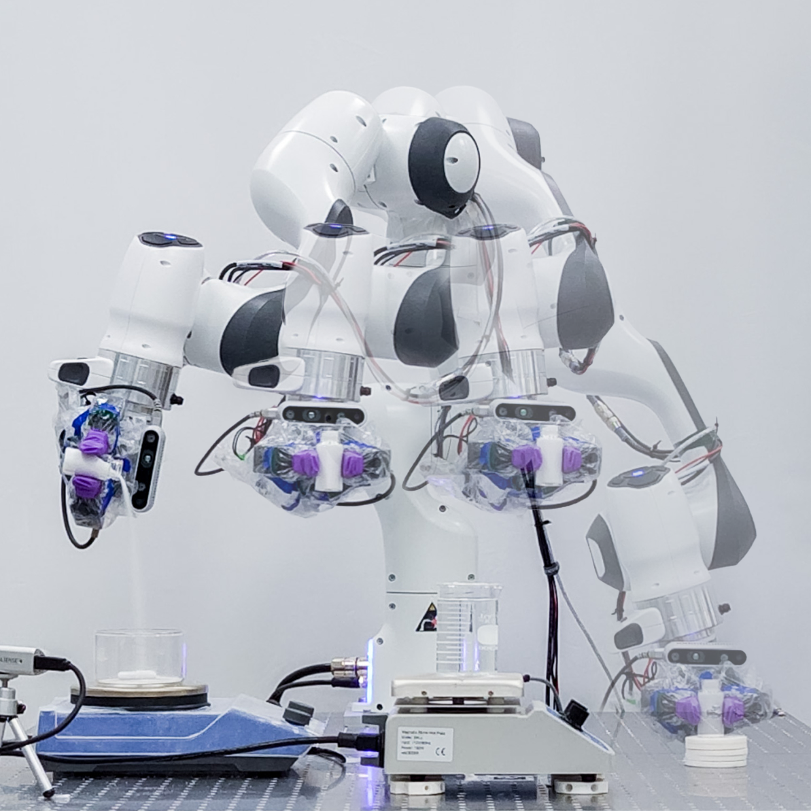
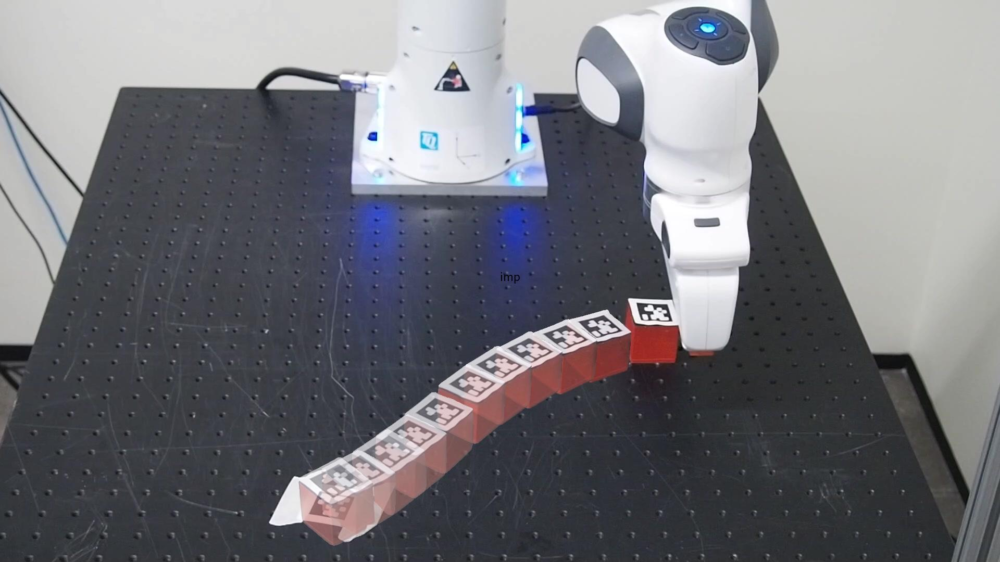

sequence photography with segment anything
Visualizing motion is difficult in static images.
After all, motion and static are antonyms.
Common techniques like lower shutter speeds and long exposures add motion blur to the image. This blur can imbue the image with a sense of dynamism straight out of the camera. However, it also reduces moving objects into amorphous streaks across the image.
Sometimes, we want to show the motion of an object across time without losing its form. For example, we often want to clearly show the trajectory of an entity, like the path of a robot or the progression of a dance move. However, taking a long-exposure of a robot arm moving across a workspace would blur the arm into a streak covering half the image, making it difficult to see the arm's position at any given time.
One technique is to periodically extract the subject from a series of frames across time and composite them into a single sequence photo. This allows the subject to appear like it would in a static photo while also showing its evolution across time. 
existing workflow
Creating sequence photos involves manually masking out the moving subject of interest in every frame in an image manipulation tool. Adobe's Photoshop recently added automatic segmentation tools to help make the masking process easier, but their tools require a subscription.
A simple idea is to stack the images and mask out anything that moves (anything that differs from the stack median).
This works in many cases, but it forces moving non-subject elements to be included. Sometimes we are interested in the movement of something small, but there are large objects moving around it that could cause problems:
- Compositing large non-subject objects could cover the subject's position in a previous frame (blocking the trajectory in the final image)
- Having multiple large, non-subject objects in the image probably impairs the composition
- Background movement is distracting
A good example of this is trying to create a sequence photo that displays the path of a small mobile robot among a crowd of people. We could just draw a line to show the path of the subject, but this is limited to motions in 2D (and doesn't look cool).
New Workflow
We can automate creating sequence photos using Meta's SAM 2, which can now accurately propagate segmentations across video frames.
Steps:- Prompt SAM 2 to segment the subject across the video
- Given a frequency to sample frames from, use the segmentation masks to remove the background from each sampled frame
- If given an alpha decay rate or an array of opacity values, set the opacity of each frame accordingly
- Merge the frames into a single image
results

Code: Python Notebook Gist
(Adapted from SAM 2's Video Prediction Example Notebook)